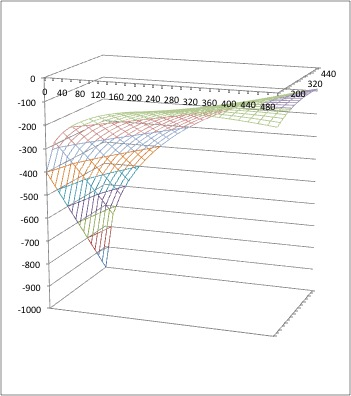

経済学で出る数学
ワークブックでじっくり攻める：問7.4(1)解答例
【解答 7.4(1)】
-
【Step 1】偏微分する．
\begin{align}
\dfrac{\partial f}{\partial x}(x,y)&=\dfrac{1}{2}x^{-\frac{1}{2}}y^{\frac{2}{3}}-1
\\
\dfrac{\partial f}{\partial y}(x,y)&=\dfrac{2}{3}x^{\frac{1}{2}}y^{-\frac{1}{3}}-2
\end{align}
-
【Step 2】$1$階条件から導かれる方程式は，
\[
\left\{\begin{align}
\dfrac{1}{2}x^{-\frac{1}{2}}y^{\frac{2}{3}}&=1 \cdots (1)\\
\dfrac{2}{3}x^{\frac{1}{2}}y^{-\frac{1}{3}}&=2 \cdots (2)
\end{align}
\right.
\]
$(1)\div (2)$ を作ると $3x^{-1}y=2$．ゆえに $y=\dfrac{2}{3}x$．(1) に代入すると
$\dfrac{1}{2}x^{-\frac{1}{2}}\left(\dfrac{2}{3}\right)^{\frac{2}{3}}x^{\frac{2}{3}}
=\dfrac{1}{2}x^{\frac{1}{6}}\left(\dfrac{2}{3}\right)^{\frac{2}{3}}=1\Longleftrightarrow
x^{\frac{1}{6}}=2\times \left(\dfrac{3}{2}\right)^{\frac{2}{3}}$．
ゆえに，$x=2^6\times \left(\dfrac{3}{2}\right)^{\frac{2}{3}\times 6}=2^2\times 3^4$．$y=\dfrac{2}{3}\times 2^2\times 3^4=2^3\times 3^3$．
以上より， $(x,y)=(2^2\times 3^4,2^3\times 3^3)$ が$1$階条件を満たす．
【問 7.4(1) 終わり】
【メモ】
- $(x,y)=(2^23^4,2^33^3)$ は最大解でも最小解でもない．それは次の数値例から確認できる．
- $f(2^23^4, 2^33^3)$$=
(2^23^4)^{\frac{1}{2}}(2^33^3)^{\frac{2}{3}}-2^23^4-2\cdot 2^33^3
=2^33^4-2^23^4-2^43^3=2^23^3(2\times 3-3^2-2^2)=2^23^3(6-3-4)=
-(2^23^3)$
- $f(2^23^4, 2^63^3)=
(2^23^4)^{\frac{1}{2}}(2^63^3)^{\frac{2}{3}}-2^23^4-2\cdot 2^63^3
=2^53^4-2^23^4-2^73^3=2^23^3(2^33-3-2^53)
=2^23^3(24-3-96)=-75(2^23^3)$
- $f(0, 0)=0$
まとめると，$f(2^23^2, 2^63^3)$ <
$f(2^23^4, 2^33^3)$$ < $f(0, 0)．
-
気づいたのは second derivative test（『経出るの範囲外） を行ったのがきっかけ．
\[
\left|
\begin{array}{cc}
\dfrac{{\partial}^2 f}{\partial x^2}(x,y) &
\dfrac{{\partial}^2 f}{\partial y \partial x}(x,y)\\
\dfrac{{\partial}^2 f}{\partial x \partial y}(x,y) &
\dfrac{{\partial}^2 f}{\partial y^2}(x,y) \\
\end{array}
\right|
=
\left|
\begin{array}{cc}
\dfrac{-1}{4}x^{-\frac{3}{2}}y^{\frac{3}{2}} &
\dfrac{1}{3}x^{-\frac{1}{2}}y^{-\frac{1}{2}} \\
\dfrac{1}{3}x^{-\frac{1}{2}}y^{-\frac{1}{2}} &
\dfrac{-2}{9}x^{\frac{1}{2}}y^{-\frac{3}{4}} \\
\end{array}
\right|
=\dfrac{1}{18}x^{-1}y^{-\frac{2}{3}}-\dfrac{1}{9}x^{-1}y^{-\frac{2}{3}} < 0
\]
となり，second derivative test 失格である．
- やや見づらいが$(2^23^4, 2^33^3)=(324,216)$が鞍点になっているのが分かる．

- 本問は本来，問7.5にもってくればよかった．
【メモ終】
解答例一覧へ
（2015.12.17更新）